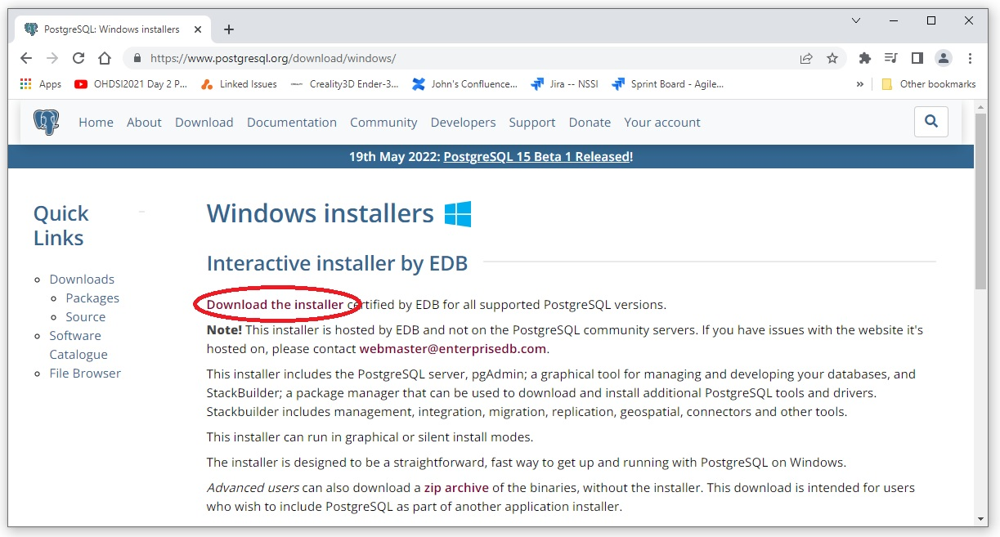
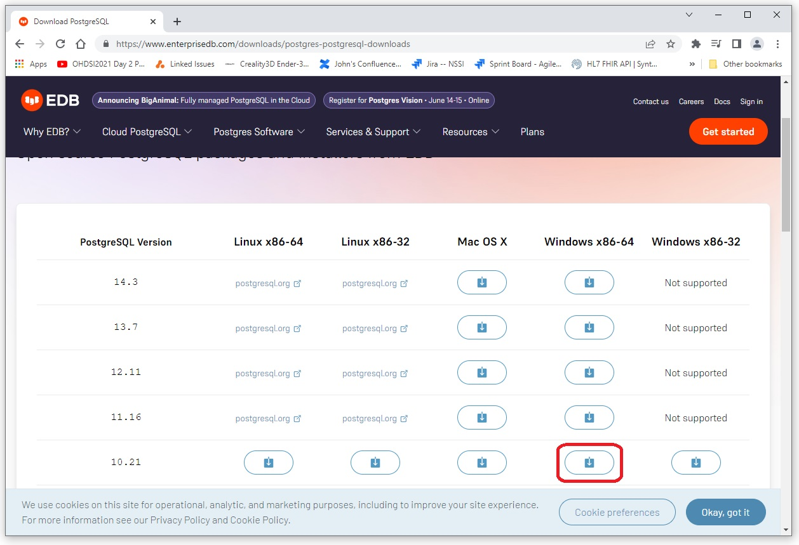
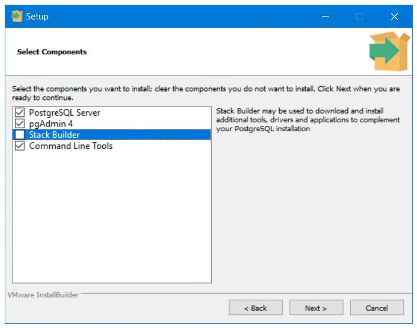
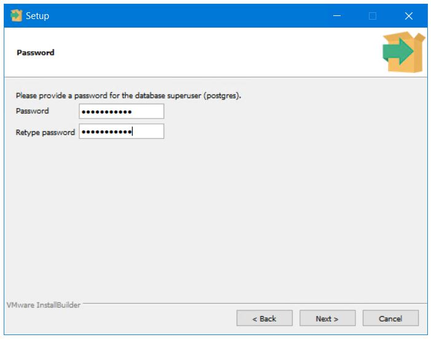
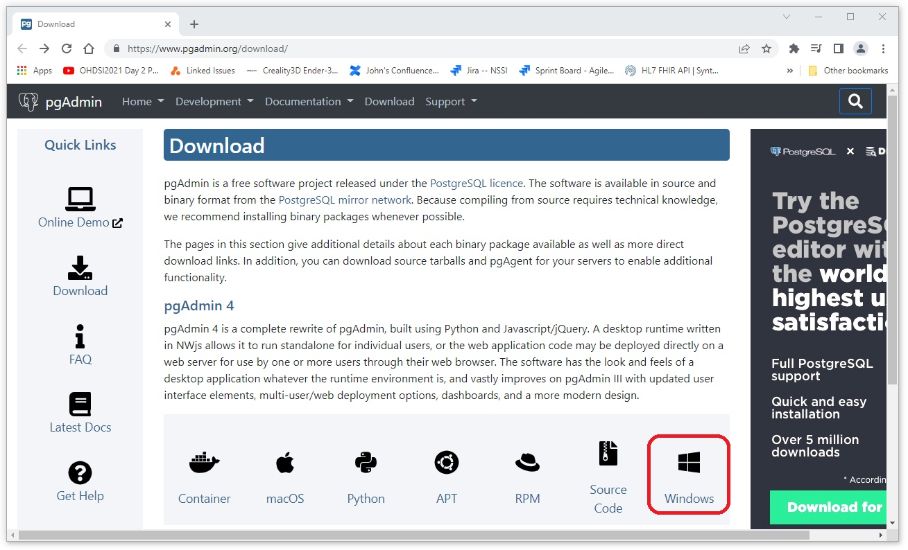
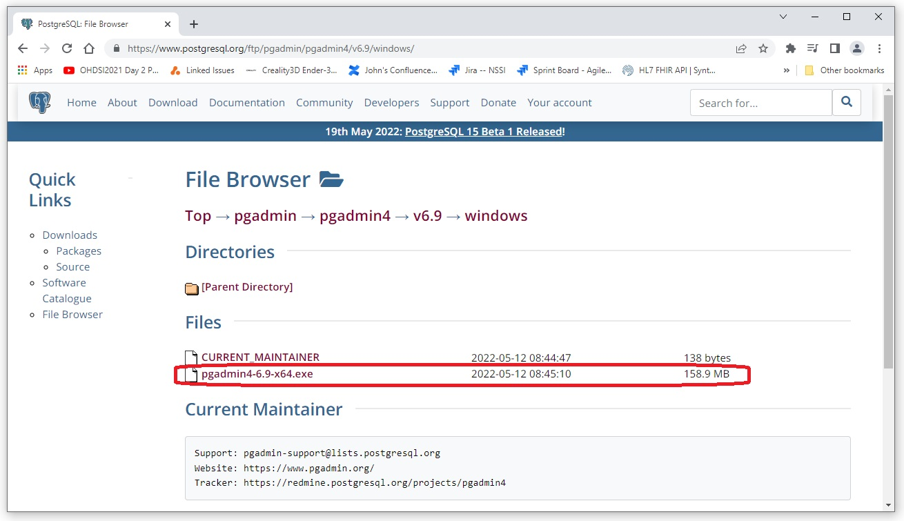

The installer for PostgreSql can be down loaded from https://www.postgresql.org/download/windows/
Select the installer for PostgreSql 10.21 and Windows x86-64.
De-select the option to run the stack builder
Enter and remember your password when asked to do so
pgAdmin 4 can be down loaded from https://www.pgadmin.org/download/. Select the Windows option.
Download and run the executable.
